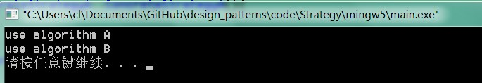

5. 策略模式¶
5.1. 模式动机¶
完成一项任务，往往可以有多种不同的方式，每一种方式称为一个策略，我们可以根据环境或者条件的不同选择不同的策略来完成该项任务。
在软件开发中也常常遇到类似的情况，实现某一个功能有多个途径，此时可以使用一种设计模式来使得系统可以灵活地选择解决途径，也能够方便地增加新的解决途径。
在软件系统中，有许多算法可以实现某一功能，如查找、排序等，一种常用的方法是硬编码(Hard Coding)在一个类中，如需要提供多种查找算法，可以将这些算法写到一个类中，在该类中提供多个方法，每一个方法对应一个具体的查找算法；当然也可以将这些查找算法封装在一个统一的方法中，通过if…else…等条件判断语句来进行选择。这两种实现方法我们都可以称之为硬编码，如果需要增加一种新的查找算法，需要修改封装算法类的源代码；更换查找算法，也需要修改客户端调用代码。在这个算法类中封装了大量查找算法，该类代码将较复杂，维护较为困难。
除了提供专门的查找算法类之外，还可以在客户端程序中直接包含算法代码，这种做法更不可取，将导致客户端程序庞大而且难以维护，如果存在大量可供选择的算法时问题将变得更加严重。
为了解决这些问题，可以定义一些独立的类来封装不同的算法，每一个类封装一个具体的算法，在这里，每一个封装算法的类我们都可以称之为策略(Strategy)，为了保证这些策略的一致性，一般会用一个抽象的策略类来做算法的定义，而具体每种算法则对应于一个具体策略类。
5.2. 模式定义¶
策略模式(Strategy Pattern)：定义一系列算法，将每一个算法封装起来，并让它们可以相互替换。策略模式让算法独立于使用它的客户而变化，也称为政策模式(Policy)。
策略模式是一种对象行为型模式。
5.3. 模式结构¶
策略模式包含如下角色：
Context: 环境类
Strategy: 抽象策略类
ConcreteStrategy: 具体策略类
5.4. 时序图¶

5.5. 代码分析¶
1#include <iostream>
2#include "Context.h"
3#include "ConcreteStrategyA.h"
4#include "ConcreteStrategyB.h"
5#include "Strategy.h"
6#include <vector>
7using namespace std;
8
9int main(int argc, char *argv[])
10{
11 Strategy * s1 = new ConcreteStrategyA();
12 Context * cxt = new Context();
13 cxt->setStrategy(s1);
14 cxt->algorithm();
15
16 Strategy *s2 = new ConcreteStrategyB();
17 cxt->setStrategy(s2);
18 cxt->algorithm();
19
20 delete s1;
21 delete s2;
22
23 int rac1 = 0x1;
24 int rac2 = 0x2;
25 int rac3 = 0x4;
26 int rac4 = 0x8;
27
28 int i = 0xe;
29 int j = 0x5;
30
31 int r1 = i & rac1;
32 int r2 = i & rac2;
33 int r3 = i & rac3;
34 int r4 = i & rac4;
35
36 cout <<"res:" << r1 << "/" << r2 << "/" << r3 << "/" << r4 << endl;
37
38 return 0;
39}
1///////////////////////////////////////////////////////////
2// Context.h
3// Implementation of the Class Context
4// Created on: 09-十月-2014 22:21:07
5// Original author: colin
6///////////////////////////////////////////////////////////
7
8#if !defined(EA_0DA87730_4DEE_4392_9BAF_4AC64A8A07A4__INCLUDED_)
9#define EA_0DA87730_4DEE_4392_9BAF_4AC64A8A07A4__INCLUDED_
10
11#include "Strategy.h"
12
13class Context
14{
15
16public:
17 Context();
18 virtual ~Context();
19
20
21 void algorithm();
22 void setStrategy(Strategy* st);
23
24private:
25 Strategy *m_pStrategy;
26
27};
28#endif // !defined(EA_0DA87730_4DEE_4392_9BAF_4AC64A8A07A4__INCLUDED_)
1///////////////////////////////////////////////////////////
2// Context.cpp
3// Implementation of the Class Context
4// Created on: 09-十月-2014 22:21:07
5// Original author: colin
6///////////////////////////////////////////////////////////
7
8#include "Context.h"
9
10Context::Context(){
11}
12
13Context::~Context(){
14}
15
16void Context::algorithm(){
17 m_pStrategy->algorithm();
18}
19
20void Context::setStrategy(Strategy* st){
21 m_pStrategy = st;
22}
1///////////////////////////////////////////////////////////
2// ConcreteStrategyA.h
3// Implementation of the Class ConcreteStrategyA
4// Created on: 09-十月-2014 22:21:06
5// Original author: colin
6///////////////////////////////////////////////////////////
7
8#if !defined(EA_9B180F12_677B_4e9b_A243_1F5DAD93FE1D__INCLUDED_)
9#define EA_9B180F12_677B_4e9b_A243_1F5DAD93FE1D__INCLUDED_
10
11#include "Strategy.h"
12
13class ConcreteStrategyA : public Strategy
14{
15
16public:
17 ConcreteStrategyA();
18 virtual ~ConcreteStrategyA();
19
20 virtual void algorithm();
21
22};
23#endif // !defined(EA_9B180F12_677B_4e9b_A243_1F5DAD93FE1D__INCLUDED_)
1///////////////////////////////////////////////////////////
2// ConcreteStrategyA.cpp
3// Implementation of the Class ConcreteStrategyA
4// Created on: 09-十月-2014 22:21:07
5// Original author: colin
6///////////////////////////////////////////////////////////
7
8#include "ConcreteStrategyA.h"
9#include <iostream>
10using namespace std;
11
12ConcreteStrategyA::ConcreteStrategyA(){
13
14}
15
16ConcreteStrategyA::~ConcreteStrategyA(){
17
18}
19
20void ConcreteStrategyA::algorithm(){
21 cout << "use algorithm A" << endl;
22}
运行结果：
5.6. 模式分析¶
策略模式是一个比较容易理解和使用的设计模式，策略模式是对算法的封装，它把算法的责任和算法本身分割开，委派给不同的对象管理。策略模式通常把一个系列的算法封装到一系列的策略类里面，作为一个抽象策略类的子类。用一句话来说，就是“准备一组算法，并将每一个算法封装起来，使得它们可以互换”。
在策略模式中，应当由客户端自己决定在什么情况下使用什么具体策略角色。
策略模式仅仅封装算法，提供新算法插入到已有系统中，以及老算法从系统中“退休”的方便，策略模式并不决定在何时使用何种算法，算法的选择由客户端来决定。这在一定程度上提高了系统的灵活性，但是客户端需要理解所有具体策略类之间的区别，以便选择合适的算法，这也是策略模式的缺点之一，在一定程度上增加了客户端的使用难度。
5.7. 实例¶
5.8. 优点¶
策略模式的优点
策略模式提供了对“开闭原则”的完美支持，用户可以在不修改原有系统的基础上选择算法或行为，也可以灵活地增加新的算法或行为。
策略模式提供了管理相关的算法族的办法。
策略模式提供了可以替换继承关系的办法。
使用策略模式可以避免使用多重条件转移语句。
5.9. 缺点¶
策略模式的缺点
客户端必须知道所有的策略类，并自行决定使用哪一个策略类。
策略模式将造成产生很多策略类，可以通过使用享元模式在一定程度上减少对象的数量。
5.10. 适用环境¶
在以下情况下可以使用策略模式：
如果在一个系统里面有许多类，它们之间的区别仅在于它们的行为，那么使用策略模式可以动态地让一个对象在许多行为中选择一种行为。
一个系统需要动态地在几种算法中选择一种。
如果一个对象有很多的行为，如果不用恰当的模式，这些行为就只好使用多重的条件选择语句来实现。
不希望客户端知道复杂的、与算法相关的数据结构，在具体策略类中封装算法和相关的数据结构，提高算法的保密性与安全性。
5.11. 模式应用¶
5.12. 模式扩展¶
策略模式与状态模式
可以通过环境类状态的个数来决定是使用策略模式还是状态模式。
策略模式的环境类自己选择一个具体策略类，具体策略类无须关心环境类；而状态模式的环境类由于外在因素需要放进一个具体状态中，以便通过其方法实现状态的切换，因此环境类和状态类之间存在一种双向的关联关系。
使用策略模式时，客户端需要知道所选的具体策略是哪一个，而使用状态模式时，客户端无须关心具体状态，环境类的状态会根据用户的操作自动转换。
如果系统中某个类的对象存在多种状态，不同状态下行为有差异，而且这些状态之间可以发生转换时使用状态模式；如果系统中某个类的某一行为存在多种实现方式，而且这些实现方式可以互换时使用策略模式。
5.13. 总结¶
在策略模式中定义了一系列算法，将每一个算法封装起来，并让它们可以相互替换。策略模式让算法独立于使用它的客户而变化，也称为政策模式。策略模式是一种对象行为型模式。
策略模式包含三个角色：环境类在解决某个问题时可以采用多种策略，在环境类中维护一个对抽象策略类的引用实例；抽象策略类为所支持的算法声明了抽象方法，是所有策略类的父类；具体策略类实现了在抽象策略类中定义的算法。
策略模式是对算法的封装，它把算法的责任和算法本身分割开，委派给不同的对象管理。策略模式通常把一个系列的算法封装到一系列的策略类里面，作为一个抽象策略类的子类。
策略模式主要优点在于对“开闭原则”的完美支持，在不修改原有系统的基础上可以更换算法或者增加新的算法，它很好地管理算法族，提高了代码的复用性，是一种替换继承，避免多重条件转移语句的实现方式；其缺点在于客户端必须知道所有的策略类，并理解其区别，同时在一定程度上增加了系统中类的个数，可能会存在很多策略类。
策略模式适用情况包括：在一个系统里面有许多类，它们之间的区别仅在于它们的行为，使用策略模式可以动态地让一个对象在许多行为中选择一种行为；一个系统需要动态地在几种算法中选择一种；避免使用难以维护的多重条件选择语句；希望在具体策略类中封装算法和与相关的数据结构。